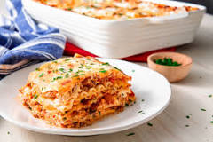

Lasagna

Descreption
Ingredients
- 1 (16 ounce) package lasagna noodles
- 1 pound lean ground beef
- salt and pepper to taste
Steps
- Bring a large pot of lightly salted water to a boil. Add pasta and cook for 8 to 10 minutes or until al dente; drain.
- Preheat oven to 350 degrees F (175 degrees C). In a large skillet over medium-high heat, brown beef and season with salt and pepper; drain. Stir in spaghetti sauce and garlic and simmer 5 minutes.